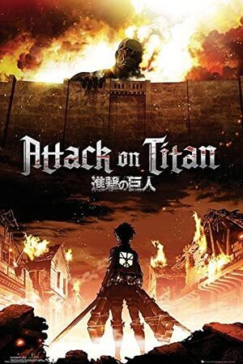
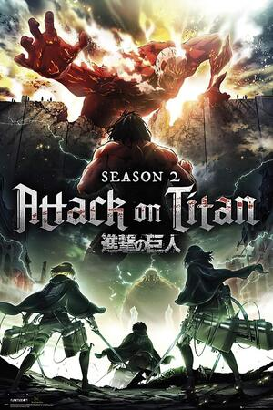
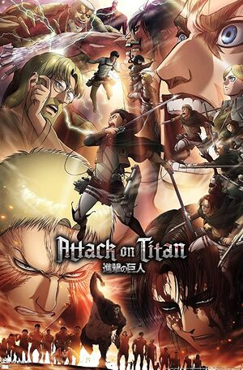
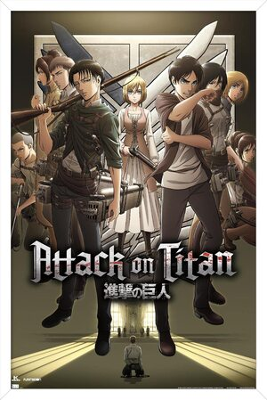

Season 1:
進撃の巨人は、人間型生物である巨人と呼ばれる存在に食べられないため、マリア、ローゼ、シーナの三つの城壁に囲まれたパラディ島世界で生き残る物語から始まります。物語は、エレン・イェーガー、彼の養妹であるミカサ・アッカーマン、そして彼らの友人であるアルミン・アルレルトが、巨人によって両親を失い、その過程で調査兵団に入隊することになった経緯を描いています。最終的に、調査兵団は、実際には神秘的な力によって変身した人間であることが判明した巨人について発見することになります。

Season 2:
シーズン2では、調査兵団が巨人の起源を調べ、他の巨人を操る能力を持つ獣の巨人や大量の蒸気を生成することができる超大型の巨人など、新しい能力を持つ巨人たちと対峙することになります。一方、調査兵団のメンバーであるクリスタ・レンズは、巨人の起源の秘密を知るレイス家の一員であるヒストリア・レイスとしての真の正体を明らかにすることになります。また、巨人に変身することができるエレンは、他の巨人を操ることができる座標という力を持っていることを知ることになります。このシーズンでは、大地の悪魔と取引をしたエルディア人であるイバル・フリッツから巨人が作られたことを知ることになり、物語は終わりを迎えます。

Season 3 (Part 1):
シーズン3のパート1では、調査兵団の兵士たちが彼らの世界の歴史について真実を発見します。エルディア人は過去、巨人の力で世界を支配していた帝国でしたが、多数の国々が結集して起こった戦争に敗北し、その後は街で生活するようになり、彼らの子供たちは巨人に変身できるように連れて行かれました。そして、彼らが暮らしているパラディ島の政府が巨人に関する真実や壁の外の世界に関する真実を隠していたことを知ることになります。

Season 3 (Part 2):
シーズン3のパート2では、調査兵団と偵察兵団のメンバーたちは腐敗した政府と警察を転覆させます。彼らはまた、獣の巨人の所有者であるジーク・イェーガーがエレンの義兄弟であることが明らかになり、彼と対立します。一方、エレンと彼の友人たちは彼の家に隠された地下室を発見し、そこで世界の歴史と巨人の起源についての真実を発見します。彼らは始祖の巨人であるユミル・フリッツが地球の悪魔と接触して彼女の力を得たことを発見します。エレンはまた、彼の父親であるグリシャ・イェーガーがリース家から始祖の巨人の力を盗んで、それをエレンに与えた人物であることを知ります。このシーズンは終わります。

Season 4:
進撃の巨人の最終シーズンでは、過去のシーズンとは異なり、強国マーレ帝国に焦点が当てられています。マーレ帝国は数年間パラディ島との戦争を繰り広げています。今シーズンの主人公は、マーレ帝国の勇士候補であるガビ・ブラウンであり、ガビは鎧の巨人の力を受け継ぎたいと考えています。シーズンが進むにつれ、ガビや他の勇士たちはパラディ島に入り、最も強力な巨人である始祖の巨人を手に入れるために任務を遂行します。このシーズンは、すべての人々が自分たちの生存のために戦う複雑な世界で、人種差別や暴力に対する倫理的な考えなどを扱い、戦争の苦しみを描きます。一方、今シーズンではシリーズの主人公であるエレン・イェーガーも当然登場します。エレンは調査兵団と共に容赦のない戦争を繰り広げ、マーレ帝国と戦います。エレンは現在、始祖の巨人と進撃の巨人を両方所有しており、その力は以前よりも強力になっています。しかし、戦争を繰り広げる理由や目的は依然として謎に包まれており、エレンの真の意図を知らない友人や同僚たちは暗闇の中で迷い始めます。シーズンが進むにつれ、物語はより複雑になり、政治的な陰謀や進撃の巨人の世界の歴史や神話を探求しながら多くの新しい登場人物が現れ、以前の登場人物たちも再び登場しながら、シーズンは壮大な結末に向けてますますドラマチックな展開を見せます。進撃の巨人の最終シーズンは非常に感動的で強力な結末を見せ、このシーズンは間違いなくシリーズの中で最も有名で影響力があり、最終章にふさわしい内容を見せます。